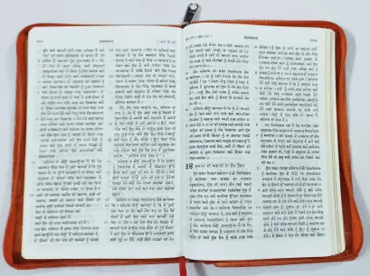

ਬਾਈਬਲ ਕੀ ਹੈ?
ਇੱਕ ਵੱਡੀ ਕਿਤਾਬ?
ਇੱਕ ਵੱਡੀ ਕਿਤਾਬ? ਬਾਈਬਲ ਬਾਰੇ ਸਭ ਤੋਂ ਪਹਿਲੀ ਗੱਲ ਇਹ ਹੈ ਕਿ ਇਹ ਇਕ ਕਿਤਾਬ ਨਹੀਂ ਹੈ, ਸਗੋਂ 66 ਕਿਤਾਬਾਂ ਦਾ ਸੰਗ੍ਰਹਿ ਹੈ! ਹਾਲਾਂਕਿ ਅਸੀਂ ਉਨ੍ਹਾਂ ਨੂੰ ਕਿਤਾਬਾਂ ਕਹਿੰਦੇ ਹਾਂ, ਬਾਈਬਲ ਅਸਲ ਵਿੱਚ ਕਹਾਣੀਆਂ, ਇਤਿਹਾਸ, ਕਵਿਤਾ ਅਤੇ ਗੀਤ, ਜੀਵਨੀਆਂ, ਅਤੇ ਬਹੁਤ ਸਾਰੇ ਪੱਤਰ ਹਨ (ਇਹ ਈਮੇਲ ਤੋਂ ਪਹਿਲਾਂ ਸੀ, ਯਾਦ ਹੈ?)
ਕਿਉਂਕਿ ਇਸ ਵਿੱਚ ਬਹੁਤ ਸਾਰੀਆਂ ਵੱਖ-ਵੱਖ ਕਿਸਮਾਂ ਦੀਆਂ ਲਿਖਤਾਂ ਸ਼ਾਮਲ ਹਨ, ਬਾਈਬਲ ਨੂੰ ਆਮ ਤੌਰ 'ਤੇ ਜ਼ਿਆਦਾਤਰ ਆਧੁਨਿਕ ਕਿਤਾਬਾਂ ਵਾਂਗ ਕਵਰ ਤੋਂ ਕਵਰ ਤੱਕ ਨਹੀਂ ਪੜ੍ਹਿਆ ਜਾਂਦਾ ਹੈ (ਹਾਲਾਂਕਿ ਇਹ ਜ਼ਰੂਰ ਹੋ ਸਕਦਾ ਹੈ)। ਇਸ ਦੀ ਬਜਾਇ, ਵਿਸ਼ਵਾਸੀ ਆਮ ਤੌਰ 'ਤੇ ਇਸ ਨੂੰ ਬਾਈਬਲ ਦੇ ਖਾਸ ਅੰਸ਼ਾਂ ਨੂੰ ਪੜ੍ਹਨ ਲਈ ਖੋਲ੍ਹਦੇ ਹਨ, ਜਿਵੇਂ ਕਿ ਯਿਸੂ ਬਾਰੇ ਕਹਾਣੀਆਂ ਜਾਂ ਪਰਮੇਸ਼ੁਰ ਲਈ ਲਿਖੇ ਗਏ ਉਸਤਤ ਦੇ ਗੀਤ।
ਇਹ ਸਮਝਣ ਲਈ ਕਿ ਬਾਈਬਲ ਇੰਨੀਆਂ ਵੱਖੋ-ਵੱਖਰੀਆਂ ਕਿਤਾਬਾਂ ਨਾਲ ਕਿਉਂ ਬਣੀ ਹੈ, ਇਹ ਬਾਈਬਲ ਦੇ ਇਤਿਹਾਸ ਬਾਰੇ ਅਤੇ ਇਹ ਕਿਵੇਂ ਲਿਖੀ ਗਈ ਸੀ ਬਾਰੇ ਥੋੜ੍ਹਾ ਜਿਹਾ ਜਾਣਨ ਵਿਚ ਮਦਦ ਕਰਦੀ ਹੈ। ਪ੍ਰਮਾਤਮਾ ਨੇ ਲਗਭਗ 3,000 ਸਾਲ ਪਹਿਲਾਂ ਮਨੁੱਖਜਾਤੀ ਲਈ ਆਪਣੇ ਸੰਦੇਸ਼ਾਂ ਨੂੰ ਲਿਖਣ ਲਈ ਲੋਕਾਂ ਨੂੰ ਪ੍ਰੇਰਿਤ ਕਰਨਾ ਸ਼ੁਰੂ ਕੀਤਾ (ਸ਼ੁਰੂਆਤੀ ਤਾਰੀਖਾਂ ਥੋੜੀਆਂ ਅਸਪਸ਼ਟ ਹਨ)। ਲਗਭਗ 1,600 ਸਾਲਾਂ ਦੇ ਅਰਸੇ ਵਿੱਚ, ਇਤਿਹਾਸ ਦੇ ਵੱਖੋ-ਵੱਖਰੇ ਸਮਿਆਂ ਅਤੇ ਸੰਸਾਰ ਭਰ ਦੇ ਵੱਖ-ਵੱਖ ਸਥਾਨਾਂ ਦੇ ਚਾਲੀ ਵੱਖੋ-ਵੱਖਰੇ ਲੇਖਕਾਂ ਨੇ ਉਹ ਗੱਲਾਂ ਦਰਜ ਕੀਤੀਆਂ ਜੋ ਪਰਮੇਸ਼ੁਰ ਨੇ ਉਨ੍ਹਾਂ ਨੂੰ ਕਹਿਣ ਲਈ ਪ੍ਰੇਰਿਤ ਕੀਤਾ। ਅਤੇ ਫਿਰ ਵੀ, ਲੇਖਕਾਂ ਦੇ ਇਸ ਵੰਨ-ਸੁਵੰਨੇ ਸਮੂਹ ਦੇ ਬਾਵਜੂਦ, ਬਾਈਬਲ ਜ਼ਰੂਰੀ ਤੌਰ 'ਤੇ ਉਹੀ ਕਹਾਣੀ ਦੱਸਦੀ ਹੈ: ਉਹ ਕਹਾਣੀ ਜਿਸ ਨੇ ਲੋਕਾਂ ਨੂੰ ਯਿਸੂ ਵੱਲ ਲੈ ਜਾਇਆ, ਸੰਸਾਰ ਲਈ ਪਰਮੇਸ਼ੁਰ ਦਾ ਅੰਤਮ ਸੰਦੇਸ਼।

ਬਾਈਬਲ ਸ਼ਾਇਦ ਇਕ ਬਹੁਤ ਵੱਡੀ ਕਿਤਾਬ ਜਾਪਦੀ ਹੈ। ਕੁਝ ਲੋਕ ਸੋਚਦੇ ਜਾਂ ਸੁਣਦੇ ਹਨ ਕਿ ਬਾਈਬਲ ਰਹੱਸਮਈ ਹੈ ਜਾਂ ਸਮਝਣਾ ਮੁਸ਼ਕਲ ਹੈ। ਉਨ੍ਹਾਂ ਨੂੰ ਸ਼ਾਇਦ ਇਹ ਵੀ ਦੱਸਿਆ ਗਿਆ ਹੋਵੇ ਕਿ ਸਿਰਫ਼ ਸੇਵਕ ਜਾਂ ਪੁਜਾਰੀ ਹੀ ਬਾਈਬਲ ਨੂੰ ਸੱਚ-ਮੁੱਚ ਸਮਝ ਸਕਦੇ ਹਨ।
ਇਸ ਲਈ ਇਹ ਇਹ ਜਾਣਨ ਵਿਚ ਮਦਦ ਕਰਦਾ ਹੈ ਕਿ ਬਾਈਬਲ ਅਸਲ ਵਿਚ ਕੀ ਹੈ: ਹਰ ਜਗ੍ਹਾ ਸਾਰੇ ਲੋਕਾਂ ਲਈ ਪਰਮੇਸ਼ੁਰ ਦਾ ਸੰਦੇਸ਼, ਆਮ ਲੋਕਾਂ (ਹਰ ਕੋਈ!) ਦੁਆਰਾ ਪੜ੍ਹਿਆ ਜਾਣਾ ਹੈ।

ਇੱਕ ਨੇਮ ਕੀ ਹੈ?
ਸ਼ਬਦ "ਟੈਸਟਮੈਂਟ" ਸਾਨੂੰ ਵਸੀਅਤ ("ਆਖਰੀ ਵਸੀਅਤ ਅਤੇ ਨੇਮ") ਬਾਰੇ ਸੋਚਣ ਲਈ ਮਜਬੂਰ ਕਰ ਸਕਦਾ ਹੈ: ਇੱਕ ਕਾਨੂੰਨੀ ਦਸਤਾਵੇਜ਼ ਜੋ ਕਿਸੇ ਵਿਅਕਤੀ ਦੀਆਂ ਇੱਛਾਵਾਂ ਦਾ ਐਲਾਨ ਕਰਦਾ ਹੈ ਕਿ ਜਦੋਂ ਉਹ ਮਰਦਾ ਹੈ ਤਾਂ ਉਸਦੀ ਜਾਇਦਾਦ ਅਤੇ ਸੰਪਤੀਆਂ ਦਾ ਕੀ ਹੁੰਦਾ ਹੈ। ਬਾਈਬਲ ਵਿਚ, ਯਿਸੂ ਦੇ ਧਰਤੀ 'ਤੇ ਆਉਣ ਤੋਂ ਬਹੁਤ ਪਹਿਲਾਂ, ਪਰਮੇਸ਼ੁਰ ਨੇ ਸਭ ਤੋਂ ਪਹਿਲਾਂ ਲੋਕਾਂ ਲਈ ਆਪਣੀ ਇੱਛਾ ਜ਼ਾਹਰ ਕੀਤੀ ਸੀ ਕਿ ਉਹ ਉਸ ਨੂੰ ਆਪਣੇ ਇਕਲੌਤੇ ਪਰਮੇਸ਼ੁਰ ਵਜੋਂ ਜਾਣਨ ਅਤੇ ਉਸ ਦੀ ਪੂਜਾ ਕਰਨ। ਬਦਲੇ ਵਿੱਚ, ਪਰਮੇਸ਼ੁਰ ਮਨੁੱਖਾਂ ਦੇ ਪਾਪ ਮਾਫ਼ ਕਰੇਗਾ। ਬਾਈਬਲ ਦਾ ਪਹਿਲਾ ਭਾਗ, ਪੁਰਾਣਾ ਨੇਮ, ਇਸ ਗੱਲ ਦੀ ਕਹਾਣੀ ਹੈ ਕਿ ਕਿਵੇਂ ਮਨੁੱਖਜਾਤੀ ਨੇ ਪਰਮੇਸ਼ੁਰ ਦੀ ਇੱਛਾ ਪ੍ਰਤੀ ਜਵਾਬ ਦਿੱਤਾ।
ਕਿਉਂਕਿ ਮਨੁੱਖਜਾਤੀ ਨੇ ਪਰਮੇਸ਼ੁਰ ਦੀ ਇੱਛਾ ਦੀ ਪਾਲਣਾ ਨਹੀਂ ਕੀਤੀ, ਪਰਮੇਸ਼ੁਰ ਨੇ ਉਨ੍ਹਾਂ ਲਈ ਮਾਫ਼ ਕੀਤੇ ਜਾਣ ਦਾ ਇੱਕ ਨਵਾਂ ਤਰੀਕਾ ਤਿਆਰ ਕੀਤਾ: ਆਪਣੇ ਇਕਲੌਤੇ ਪੁੱਤਰ ਯਿਸੂ ਨੂੰ ਉਨ੍ਹਾਂ ਦੇ ਪਾਪਾਂ ਲਈ ਮਰਨ ਲਈ ਧਰਤੀ ਉੱਤੇ ਭੇਜਣਾ। ਯਿਸੂ ਦੀਆਂ ਕਹਾਣੀਆਂ ਅਤੇ ਜਿਨ੍ਹਾਂ ਨੇ ਉਸ ਦੀ ਪਾਲਣਾ ਕਰਨ ਦੀ ਚੋਣ ਕੀਤੀ, ਉਹ ਪਰਮੇਸ਼ੁਰ ਦੇ ਨਵੇਂ ਨੇਮ ਦੀਆਂ ਕਹਾਣੀਆਂ ਹਨ, ਜਾਂ ਮਨੁੱਖ ਜਾਤੀ ਲਈ ਉਸ ਦੀ ਰਚਨਾ ਹੈ। ਅਤੇ ਇਸ ਲਈ, ਬਾਈਬਲ ਨੂੰ ਪੁਰਾਣੇ ਨੇਮ ਅਤੇ ਨਵੇਂ ਨੇਮ ਵਿੱਚ ਵੰਡਿਆ ਗਿਆ ਹੈ: ਯਿਸੂ ਦੇ ਸੰਸਾਰ ਵਿੱਚ ਆਉਣ ਤੋਂ ਪਹਿਲਾਂ ਲਿਖੀਆਂ ਕਿਤਾਬਾਂ ਅਤੇ ਬਾਅਦ ਵਿੱਚ ਲਿਖੀਆਂ ਗਈਆਂ।

ਮੈਂ ਬਾਈਬਲ ਵਿਚ ਇਕ ਹਵਾਲੇ ਕਿਵੇਂ ਲੱਭ ਸਕਦਾ ਹਾਂ?
ਬਾਈਬਲ ਪੜ੍ਹਨ ਨੂੰ ਆਸਾਨ ਬਣਾਉਣ ਲਈ, ਬਾਈਬਲ ਦੀਆਂ ਕਿਤਾਬਾਂ ਦੇ ਨਾਵਾਂ ਤੋਂ ਜਾਣੂ ਹੋਣਾ ਬਹੁਤ ਮਦਦਗਾਰ ਹੈ। ਹਾਲਾਂਕਿ ਇਹ ਇੱਕ ਔਖਾ ਕੰਮ ਜਾਪਦਾ ਹੈ, ਪਰ ਸਾਰੇ ਨਾਵਾਂ ਨੂੰ ਕ੍ਰਮ ਵਿੱਚ ਯਾਦ ਰੱਖਣਾ ਸਭ ਤੋਂ ਮਦਦਗਾਰ ਹੈ। ਇੱਕ ਦਿਨ ਵਿੱਚ 10 ਨਾਮ ਯਾਦ ਕਰਨ ਲਈ ਆਪਣੇ ਆਪ ਨੂੰ ਚੁਣੌਤੀ ਦਿਓ। ਜਦੋਂ ਤੁਸੀਂ ਅਗਲੇ 10 ਨੂੰ ਯਾਦ ਕਰਨਾ ਸ਼ੁਰੂ ਕਰਦੇ ਹੋ, ਤਾਂ ਇਹ ਸੁਨਿਸ਼ਚਿਤ ਕਰੋ ਕਿ ਤੁਸੀਂ ਪਹਿਲਾਂ ਯਾਦ ਕੀਤੀਆਂ ਕਿਤਾਬਾਂ ਦੇ ਨਾਮ ਯਾਦ ਰੱਖਦੇ ਹੋ, ਤਾਂ ਜੋ ਤੁਸੀਂ ਉਹਨਾਂ ਨੂੰ ਕ੍ਰਮ ਵਿੱਚ ਪੜ੍ਹ ਸਕੋ।
ਬਾਈਬਲ ਦੀਆਂ ਕਿਤਾਬਾਂ ਦੀ ਇੱਕ ਸੂਚੀ, ਉਹਨਾਂ ਦੇ ਸੰਖੇਪ ਰੂਪਾਂ ਦੇ ਨਾਲ, ਪੁਰਾਣੇ ਨੇਮ ਅਤੇ ਨਵੇਂ ਨੇਮ ਵਿੱਚ ਵੰਡੀਆਂ ਗਈਆਂ ਹਨ, ਅਗਲੇ ਪੰਨੇ 'ਤੇ ਦਿਖਾਈ ਦਿੰਦੀਆਂ ਹਨ। ਇਸਨੂੰ ਯਾਦ ਕਰਨ ਲਈ ਆਪਣੀ ਗਾਈਡ ਵਜੋਂ ਵਰਤੋ। ਕੁਝ ਨਾਵਾਂ ਦਾ ਉਚਾਰਨ ਕਰਨਾ ਔਖਾ ਲੱਗ ਸਕਦਾ ਹੈ। ਉਦਾਹਰਨ ਲਈ, ਅੰਗਰੇਜ਼ੀ ਵਿੱਚ ਬੁੱਕ ਆਫ਼ ਜੌਬ ਨੂੰ ਇਸ ਤਰ੍ਹਾਂ ਉਚਾਰਿਆ ਜਾਂਦਾ ਹੈ ਜਿਵੇਂ ਕਿ ਇਸਦੇ ਅੰਤ ਵਿੱਚ "ਈ" ਹੋਵੇ ("ਨੌਕਰੀ")। ਜੇ ਕਿਸੇ ਕਿਤਾਬ ਦੇ ਨਾਂ ਦਾ ਉਚਾਰਨ ਕਰਨ ਬਾਰੇ ਤੁਹਾਡੇ ਕੋਈ ਸਵਾਲ ਹਨ, ਤਾਂ ਆਪਣੇ ਬਾਈਬਲ ਸਟੱਡੀ ਅਧਿਆਪਕ ਜਾਂ ਚਰਚ ਦੇ ਕਿਸੇ ਮੰਤਰੀ ਨੂੰ ਪੁੱਛਣ ਤੋਂ ਝਿਜਕੋ ਨਾ।
ਬਾਈਬਲ ਨੂੰ ਕਿਸੇ ਵੀ ਪੰਨੇ 'ਤੇ ਖੋਲ੍ਹੋ ਅਤੇ ਤੁਸੀਂ ਬਹੁਤ ਸਾਰੇ ਛੋਟੇ ਪੈਰੇ ਦੇਖੋਗੇ, ਹਰ ਇਕ ਨੰਬਰ ਦੇ ਨਾਲ। ਇਹਨਾਂ ਨੂੰ ਛੰਦ ਕਿਹਾ ਜਾਂਦਾ ਹੈ। ਆਇਤਾਂ ਦੇ ਸੰਗ੍ਰਹਿ ਨੂੰ ਇੱਕ ਅਧਿਆਇ ਕਿਹਾ ਜਾਂਦਾ ਹੈ (ਅਤੇ ਸਾਰੇ ਅਧਿਆਵਾਂ ਵਿੱਚ ਆਇਤਾਂ ਦੀ ਗਿਣਤੀ ਇੱਕੋ ਜਿਹੀ ਨਹੀਂ ਹੁੰਦੀ ਹੈ)। ਇਸ ਵਿੱਚ ਸਿਰਫ਼ ਅਪਵਾਦ ਹਨ ਓਬਦਿਆਹ ਅਤੇ ਫਿਲੇਮੋਨ ਦੀਆਂ ਕਿਤਾਬਾਂ ਪੁਰਾਣੇ ਨੇਮ ਵਿੱਚ, 2 ਅਤੇ 3 ਜੌਨ, ਅਤੇ ਨਵੇਂ ਨੇਮ ਵਿੱਚ ਜੂਡ। ਉਹ ਅਧਿਆਇ ਵਿੱਚ ਵੰਡਿਆ ਨਹੀ ਹਨ.

ਜਦੋਂ ਲੋਕ ਬਾਈਬਲ ਦੇ ਕੁਝ ਅੰਸ਼ਾਂ ਦਾ ਹਵਾਲਾ ਦਿੰਦੇ ਹਨ, ਤਾਂ ਉਹ “ਅਧਿਆਇ ਅਤੇ ਆਇਤ” ਦੀ ਵਰਤੋਂ ਕਰਦੇ ਹਨ। ਜੇ ਕੋਈ ਚਾਹੁੰਦਾ ਹੈ ਕਿ ਤੁਸੀਂ ਯੂਹੰਨਾ ਦੀ ਕਿਤਾਬ ਦੇ ਤੀਜੇ ਅਧਿਆਇ ਦੀ ਸੋਲ੍ਹਵੀਂ ਆਇਤ ਨੂੰ ਦੇਖੋ, ਤਾਂ ਤੁਸੀਂ ਸ਼ਾਇਦ ਇਸ ਨੂੰ ਇਸ ਤਰ੍ਹਾਂ ਲਿਖਿਆ ਹੋਇਆ ਪਾਓਗੇ: ਯੂਹੰਨਾ 3 ਅਧਿਆਇ 16 ਆਇਤ।
ਇਹ ਉਹ ਥਾਂ ਹੈ ਜਿੱਥੇ ਬਾਈਬਲ ਦੀਆਂ ਕਿਤਾਬਾਂ ਦੇ ਨਾਮ ਨੂੰ ਯਾਦ ਕਰਨਾ ਕੰਮ ਆਉਂਦਾ ਹੈ: ਤੁਸੀਂ ਸਿੱਖੋਗੇ ਕਿ ਜੌਨ ਨਵੇਂ ਨੇਮ ਦੀ ਚੌਥੀ ਕਿਤਾਬ ਹੈ। ਯੂਹੰਨਾ ਦੀ ਕਿਤਾਬ ਦੀ ਪੜਚੋਲ ਕਰਨ ਤੋਂ ਬਾਅਦ, ਤੁਸੀਂ ਫਿਰ ਤੀਜਾ ਅਧਿਆਇ, ਅਤੇ ਅੰਤ ਵਿੱਚ, ਸੋਲ੍ਹਵੀਂ ਆਇਤ ਪਾਓਗੇ। ਬਾਈਬਲ ਵਿਚਲੇ ਅੰਸ਼ਾਂ ਦੇ ਸਾਰੇ ਹਵਾਲੇ ਉੱਪਰ ਦਿੱਤੇ ਜੌਨ 3 ਅਧਿਆਇ 16 ਆਇਤ ਵਿਚ ਲਿਖੇ ਗਏ ਹਨ (ਕਈ ਵਾਰ ਕਿਤਾਬ ਦਾ ਸੰਖੇਪ ਰੂਪ ਵਰਤਿਆ ਜਾਂਦਾ ਹੈ)। ਜੇ ਇਕ ਤੋਂ ਵੱਧ ਆਇਤਾਂ ਦਾ ਹਵਾਲਾ ਦਿੱਤਾ ਜਾ ਰਿਹਾ ਹੈ, ਤਾਂ ਇਹ ਇਸ ਤਰ੍ਹਾਂ ਲਿਖਿਆ ਜਾਵੇਗਾ: ਕੂਚ 20 ਅਧਿਆਇ 1 ਤੋਂ ਆਇਤਾਂ 17। ਇਸ ਦਾ ਮਤਲਬ ਹੈ ਕਿ ਤੁਸੀਂ ਕੂਚ ਦੀ ਕਿਤਾਬ ਦੇ 21ਵੇਂ ਅਧਿਆਇ ਦੀਆਂ ਪਹਿਲੀਆਂ ਸਤਾਰਾਂ ਆਇਤਾਂ ਨੂੰ ਪਾਓਗੇ। ਆਸਾਨ ਹੈ ਨਾ!
- ਪੈਦਾਇਸ਼
- ਖ਼ਰੋਜ
- ਅਹਬਾਰ
- ਗਿਣਤੀ
- ਅਸਤਸਨਾ
- ਯਸ਼ਵਾ
- ਖ਼ਰੋਜ
- ਰੁੱਤ
- ੧ ਸਮੋਈਲ
- ੨ ਸਮੋਈਲ
- ੧ ਸਲਾਤੀਨ
- ੨ ਸਲਾਤੀਨ
- ੧ ਤਵਾਰੀਖ਼
- ੨ ਤਵਾਰੀਖ਼
- ਅਜ਼ਰਾ
- ਨਹਮਿਆਹ
- ਆ ਸਤਰ
- ਅੱਯੂਬ
- ਜ਼ਬੂਰ
- ਜ਼ਬੂਰ
- ਵਾਈਜ਼
- ਗ਼ਜ਼ਲ ਅਲਗ਼ਜ਼ਲਾਤ
- ਯਸਈਆਹ
- ਯਰਮਿਆਹ
- ਨੂਹ
- ਹਿਜ਼ ਕੀ ਐਲ
- ਦਾਨੀ ਐਲ
- ਹੋ ਸੀਅ
- ਯਵਾਐਲ
- ਆਮੋਸ
- ਅਬਦ ਯਾਹ
- ਯਵਨਾਹ
- ਯਵਨਾਹ
- ਨਾ ਹੋਮ
- ਹਬਕੋਕ
- ਸਫ਼ਨਿਆਹ
- ਹਜਿ
- ਜ਼ਿਕਰ ਯਾਹ
- ਮਲਾਕੀ
- ਮੱਤੀ
- ਮਰਕੁਸ
- ਲੋਕਾ
- ਯੂਹੰਨਾ
- ਰਸੂਲਾਂ ਦੇ ਕਰਤੱਬ
- ਰੋਮੀਆਂ
- ੧ ਕੁਰਿੰਥੀਆਂ
- ੧ ਕੁਰਿੰਥੀਆਂ
- ਗਲਾਤੀਆਂ
- ਅਫ਼ਸੀਆਂ
- ਫ਼ਿਲਿੱਪੀਆਂ
- ਕੁਲੁੱਸੀਆਂ
- ੧ ਥੱਸਲੁਨੀਕੀਆਂ
- ੨ ਥੱਸਲੁਨੀਕੀਆਂ
- ੧ ਤਿਮੋਥਿਉਸ
- ੨ ਤਿਮੋਥਿਉਸ
- ਤੀਤੁਸ
- ਫ਼ਿਲੇਮੋਨ
- ਇਬਰਾਨੀਆਂ
- ਯਾਕੂਬ
- ੧ ਪਤਰਸ
- ੨ ਪਤਰਸ
- ੧ ਯੂਹੰਨਾ
- ੨ ਯੂਹੰਨਾ
- ੩ ਯੂਹੰਨਾ
- ਯਹੂ ਦਾਹ
- ਪਰਕਾਸ਼ ਦੀ ਪੋਥੀ